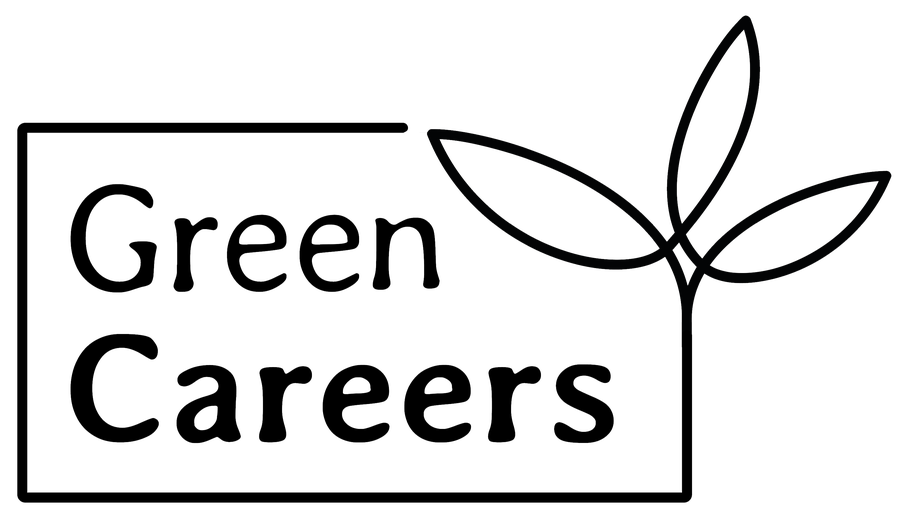

GreenCareers · Bewerber-Landingpage · Vorschlag 14.09.2026
Nach dem Kontakt-Formular sagt die Seite heute dreimal „fertig“ – Label, voller Balken, großer Haken. Der Vorschlag sagt „halb“ und zeigt, was der Bewerber für eine Minute mehr bekommt. Live-Stand: job-angebot.green-careers.de

Danke, Jana! Wir prüfen dein Profil und stellen dich passenden Betrieben aus deiner Region vor – dein erstes Job-Angebot bekommst du in unter 7 Tagen.
2 schnelle Fragen – damit GreenCareers dir das bestmögliche Angebot machen kann.
Du bewirbst dich nicht auf eine einzelne Stelle, sondern kommst in unseren Bewerberpool: Passende Betriebe aus deiner Region melden sich direkt bei dir – 100 % diskret.
Drei „Fertig“-Signale, der Kasten „Profil vervollständigen“ wirkt wie Kleingedrucktes. „2 schnelle Fragen“ stimmt nicht – Teil B hat 10.
✓Danke, Jana! Deine Bewerbung ist gespeichert.
Wunschgehalt · Umkreis · Erfahrung · Start
10 Fragen zum Antippen · ca. 1 Minute
7 von 10 Bewerbern machen weiter.
✓Danke, Jana! Deine Bewerbung ist gespeichert.
Dann zeig ihnen, was du kannst – 10 Fragen, 1 Minute.
Wunschgehalt · Umkreis · Erfahrung · Start
7 von 10 Bewerbern machen weiter.
✓Danke, Jana! Deine Bewerbung ist gespeichert.
Wunschgehalt · Umkreis · Erfahrung · Start
10 Fragen zum Antippen · ca. 1 Minute
Du bewirbst dich nicht auf eine einzelne Stelle, sondern kommst in unseren Bewerberpool: Passende Betriebe aus deiner Region melden sich direkt bei dir – 100 % diskret.
Empfehlung. Der Ring ist das große Element: eine Zahl, die „halb“ sagt. Ein Satz Nutzen, ein Button, Rest Kleingedrucktes.
Frage-geführt. Freddys „Willst du …?“-Ansatz: die Frage ist das große Element, der Ja-Button die Zusage.
„2ד ist erfunden – dazu gibt es keine Messung. Nur zur Ansicht, nicht zum Bauen.
Quelle: Screen „s-done“ der Live-Seite · Name „Jana“ als Beispiel · GreenCareers intern, Stand 14.09.2026